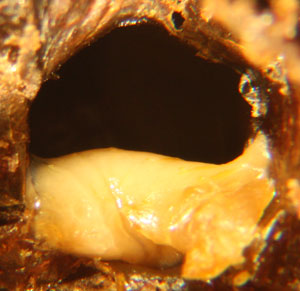
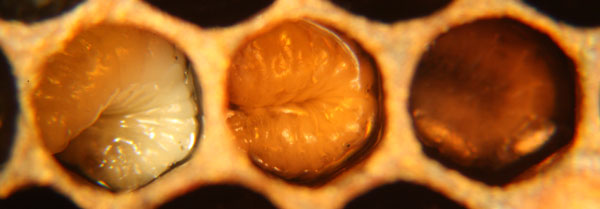
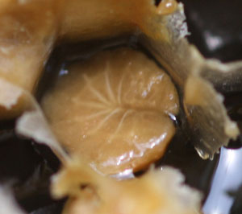
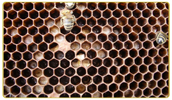
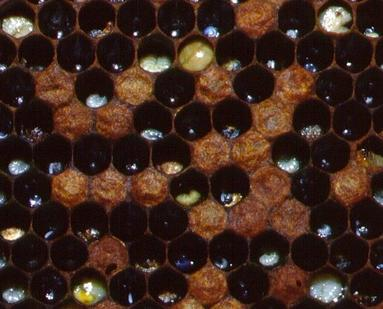
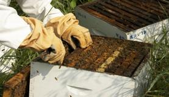

The European Foul Brood is a bacteria desease that effects honey bee larvae before the capped stage. The bacteria that causes EFB does not produce spores, but combs contaminated with the bacteria can still effect honey bees in later years. Depending on the level of infection, and possibly the amount of available food, the infected larva will either live or die. If the bee lives it will leave bacteria on the combs that can be infective for years.



Larvae becomes infected with European foulbrood when they consume brood food that contains the bacteria Melissococcus pluton. There is also some evidence that transmission may occur from bites of a mite called varroa mite. The degree of severeness is measured by how much of the bacteria was fed to the larva. Larvae were found to be more likely to die as increasing amounts of bacteria were fed.
They may give the appearance of having become restless and wandered around in the cell. Their gut line, instead of being the normal medium yellow/orange color, may have a bleached, chalky white appearance. These white patches could be bacteria in the gut. When infected they change colour from a healthy, pearly white, to yellow and through to brown. They also dry out to a loose scale that is easily removed by the house bees. Some pupae and pre-pupae may also be dead in sealed cells and the cappings of these cells are likely to be dark, sunken and perforated.

The organism becomes mixed with the brood food fed to the young larva by the nurse bees, multiplies rapidly within the gut of the larva, and causes death within about 4 days after egg hatch. House bees cleaning out the dead larvae from the cells distribute the organism throughout the hive. Since the honey of infected colonies and the beekeeper's equipment are undoubtedly contaminated, subsequent spread of the disease is accomplished by robber bees, exposure of contaminated honey by the beekeeper, interchange of contaminated equipment among colonies, and perhaps, to some extent, by drifting bees.

Samples of honey were extracted up to 12 weeks after treatment and used a method of application of Terramycin.
Shook swarm method in combination ofoxytetracycline (OTC) and compared with those treated with OTC alone, the usual treatment for EFB. The treatments had the same success rates Shook swarm plus OTC treatment resulted in a lower level of EFB

This is "Bee guard" it will help cure the European Foulbrood